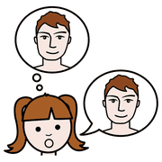
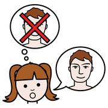
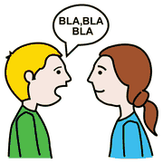

Modulo 1, conoscere
Miti da smontare
Sull'autismo circolano ancora molte idee sbagliate, al bar come in sala docenti. Partiamo da qui, perché quello che crediamo cambia il modo in cui guardiamo un alunno.
da tenere
a portata
di mano
Si sente dire, in realtà

vero
falso pensare
pensare| Si sente dire | In realtà |
|---|---|
| «Sono tutti dei piccoli geni, come nei film.» | Le abilità eccezionali (i cosiddetti savant) sono rare. Circa 4 persone nello spettro su 10 hanno anche una disabilità intellettiva, e spesso c'è distanza tra i risultati ai test e l'autonomia nella vita di tutti i giorni. |
| «È colpa di come l'hanno cresciuto.» | L'educazione ricevuta non causa l'autismo. Le teorie che accusavano le madri sono state abbandonate. |
| «L'hanno causato i vaccini.» | Nessun legame, dimostrato da molti studi su larghissima scala. |
| «Dentro c'è un bambino come gli altri, chiuso in una bolla.» | Non c'è nessuna bolla da rompere: l'autismo riguarda tutto il modo di percepire e pensare. Per lo stesso motivo non è attendibile la «comunicazione facilitata», in cui un adulto sostiene la mano della persona mentre scrive: le ricerche mostrano che i messaggi arrivano dal facilitatore. |
| «Se parla (o se ti guarda) non è autistico.» | Lo spettro è ampio: c'è chi parla moltissimo e chi non parla affatto. |
| «È diventato autistico da grande.» | L'autismo è presente fin dall'infanzia, anche quando la diagnosi arriva tardi, come succede spesso alle ragazze. |
Non si guarisce?
 imparare
imparare aiutare
aiutare crescere
crescereL'autismo non è una malattia da cui «guarire»: è un modo di funzionare che accompagna la persona per tutta la vita. Questo non vuol dire che non si possa fare nulla. Interventi precoci e basati su prove di efficacia migliorano molto comunicazione, autonomia e qualità della vita.
Tra gli approcci più studiati ci sono quelli di tipo comportamentale (derivati dall'analisi del comportamento), gli interventi evolutivi e naturalistici come il Denver Model, l'insegnamento strutturato del programma TEACCH e il coinvolgimento dei genitori. La scelta spetta ai servizi sanitari, insieme alla famiglia.
Il riferimento in Italia è la linea guida dell'Istituto Superiore di Sanità su diagnosi e trattamento in bambini e adolescenti, pubblicata nel 2023: ha aggiornato la Linea Guida 21 del 2011, che trovi ancora citata in molti testi. Alla scuola tocca una parte fondamentale: un ambiente che capisce e che non aggiunge ostacoli.
10 minuti,
anche da soli
Prova in classe
 classe
classe gruppo
gruppo
parlare- Ripensa a un mito che hai sentitoIn sala docenti, in famiglia, sui social. Quale idea c'era dietro?
- Scrivi come risponderestiDue o tre frasi semplici, senza giudicare chi l'ha detto, da usare con un collega o con un genitore.
- Guarda il tuo alunno con occhi nuoviAnnota una cosa che fa e che prima interpretavi come disinteresse o capriccio.